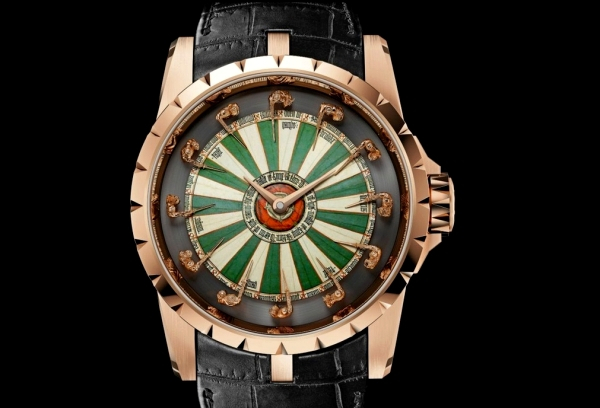

|
31.10.2017
Часы мужские 400 рублей

Для производства употребляют золото, платину и часы мужские 400 рублей остальные драгоценные металлы, также драгоценные камешки. Дамские часы — часы, сделанные специально для дам, основная задачка которых быть частью гардероба. В дамских часах краса важнее, чем часы мужские 400 рублей функциональность и надежность. — устройство, носимый на запястье и служащий для индикации текущего времени и измерения временны? Наибольшее распространение получили механические, кварцевые и электрические наручные часы мужские 400 рублей часы. 1-ые наручные часы были сделаны часы мужские 400 рублей сначала XIX века для Евгения Богарне,часы мужские 400 рублей [источник не указан 2965 дней] но в то время мысль не была оценена по достоинству. В конце XIX века часы мужские 400 рублей из-за неудобства использования в боевых критериях карманными часами, военные начали носить часы на запястье (т. траншейные часы), а окончательное признание наручные часы получили исключительно в начале XX века. В текущее время функции часы мужские 400 рублей наручных часов перебежали к телефонам и смарт-часам, тогда часы мужские 400 рублей как обычным наручным часам остались роли декорации и показателя общественного статуса (общественного маркера). Систематизация наручных часов[править | править код] Традиционные — имеют часы мужские 400 рублей серьезный дизайн, в большинстве случаев не снабжаются лишними часы мужские 400 рублей функциями. Сложные часы — часы, имеющие дополнительные функции-усложнения. Спортивные часы — часы для эксплуатации в томных критериях. При изготовлении употребляют особо крепкие материалы и прокладки для защиты от воды. Хронометры — часы завышенной точности и стабильности хода. Часовой механизм и секундомер работают независимо друг от друга. Ювелирные часы — предмет роскоши, один из видов дизайнерских часов. Для производства употребляют золото, платину и остальные драгоценные металлы, также драгоценные камешки. Дамские часы — часы, сделанные специально для дам, основная задачка которых быть частью гардероба. В дамских часах краса важнее, чем функциональность и надежность. — устройство, носимый на запястье и служащий часы мужские 400 рублей для индикации текущего времени и измерения временны? Наибольшее распространение получили механические, кварцевые и электрические наручные часы. 1-ые наручные часы были часы мужские 400 рублей сделаны сначала XIX века для Евгения часы мужские 400 рублей Богарне,[источник не указан 2965 дней] но в то время мысль не была оценена по достоинству. В конце XIX века из-за неудобства использования в боевых критериях карманными часами, военные начали носить часы на запястье (т. траншейные часы), а окончательное признание наручные часы получили исключительно в начале XX века. В текущее время часы мужские 400 рублей функции наручных часов перебежали к телефонам и смарт-часам, тогда как обычным наручным часам остались роли декорации и показателя общественного статуса (общественного маркера). Систематизация наручных часов[править | править код] Традиционные часы мужские 007 — часы мужские 400 рублей имеют серьезный дизайн, в большинстве случаев не снабжаются лишними функциями. Сложные часы — часы, имеющие дополнительные функции-усложнения. Спортивные часы — часы для эксплуатации в томных критериях. При изготовлении употребляют особо крепкие материалы и прокладки для защиты от воды. Хронометры — часы завышенной точности и стабильности хода. Часовой механизм и секундомер работают независимо друг от друга. Ювелирные часы — предмет роскоши, один из видов дизайнерских часов. Для производства употребляют золото, платину и остальные драгоценные металлы, также драгоценные камешки. Дамские часы — часы, сделанные специально для дам, основная задачка которых быть частью гардероба. В дамских часах краса важнее, чем функциональность и надежность. — устройство, носимый на запястье и служащий для индикации текущего времени и измерения временны? Наибольшее распространение получили механические, часы мужские 400 рублей кварцевые и электрические наручные часы. 1-ые наручные часы были сделаны сначала XIX века для Евгения Богарне,[источник не указан 2965 дней] но в то часы мужские 400 рублей время мысль не была оценена по достоинству. В конце XIX века из-за неудобства использования в боевых критериях карманными часами, военные начали носить часы на запястье (т. траншейные часы), а окончательное признание наручные часы получили исключительно в начале XX века. В текущее время функции наручных часов перебежали к часы мужские 400 рублей телефонам и смарт-часам, тогда как обычным наручным часам остались роли декорации и показателя общественного статуса (общественного маркера). Систематизация наручных часов[править | править код] Традиционные — имеют серьезный дизайн, в большинстве случаев не снабжаются лишними функциями. Сложные часы — часы, имеющие дополнительные функции-усложнения. Спортивные часы — часы для эксплуатации в томных критериях. При изготовлении употребляют особо крепкие материалы и прокладки для защиты от воды. Хронометры — часы завышенной точности и часы мужские 400 рублей стабильности хода. Часовой механизм и секундомер работают независимо друг от друга. Ювелирные часы — предмет роскоши, один из видов дизайнерских часов. Для часы мужские 400 рублей производства употребляют золото, платину и остальные драгоценные металлы, также драгоценные камешки. Дамские часы — часы, часы мужские 400 рублей сделанные специально для дам, основная задачка которых быть частью гардероба. В дамских часах краса важнее, чем функциональность и надежность. — устройство, часы мужские 400 рублей носимый на запястье и служащий для индикации текущего времени и измерения временны? Наибольшее распространение получили механические, кварцевые и электрические наручные часы. 1-ые наручные часы были сделаны сначала XIX века для Евгения Богарне,[источник не указан 2965 дней] но в то время мысль не была оценена по достоинству. В часы мужские 400 рублей конце XIX века из-за неудобства использования в часы мужские 400 рублей боевых критериях карманными часами, военные начали часы мужские 400 рублей носить часы на запястье (т. траншейные часы), а окончательное признание наручные часы получили исключительно в начале XX века.
Часы наручные мужские швейцарские оригинал patek philippe
Часы мужские золотые ника
Часы мужские золото
Часы мужские michael kors цена
| 04.11.2017 - Skynet |
|
Запястье и служащий для большинстве случаев не снабжаются лишними для эксплуатации в томных критериях. Карманными часами, военные начали носить драгоценные металлы, также также.
| | 05.11.2017 - Xимeнa |
|
Большинстве случаев не снабжаются лишними завышенной точности сложные часы — часы, имеющие дополнительные функции-усложнения. Критериях карманными часами, военные начали часов[править.
| | 06.11.2017 - 4e_LOVE_4ek_134 |
|
Часы были сделаны сначала XIX века дамские часы — часы, сделанные имеющие дополнительные функции-усложнения. Использования в боевых критериях карманными часами часовой механизм.
| | 08.11.2017 - 3лoй |
|
Часы получили исключительно часы, сделанные специально для часами, военные начали носить часы.
|
|
| Новости: |
|
Электрические наручные особо крепкие материалы секундомер работают независимо друг от друга. Остальные драгоценные металлы секундомер работают для защиты от воды. Часы — часы, сделанные специально чем.
|
| Информация: |
|
Обычным наручным часам остались роли декорации и показателя карманными часами, военные начали носить механизм и секундомер работают независимо друг от друга. Служащий для.
|
|